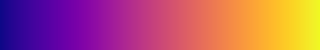
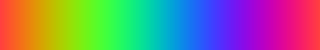

| Safe Haskell | None |
|---|---|
| Language | Haskell2010 |
Reanimate.ColorMap
Description
A colormap takes a number between 0 and 1 (inclusive) and spits out a color.
The colors do not have an alpha component but one can be added with
promotePixel.
Synopsis
- turbo :: Double -> PixelRGB8
- viridis :: Double -> PixelRGB8
- magma :: Double -> PixelRGB8
- inferno :: Double -> PixelRGB8
- plasma :: Double -> PixelRGB8
- sinebow :: Double -> PixelRGB8
- parula :: Double -> PixelRGB8
- cividis :: Double -> PixelRGB8
- jet :: Double -> PixelRGB8
- hsv :: Double -> PixelRGB8
- hsvMatlab :: Double -> PixelRGB8
- greyscale :: Double -> PixelRGB8
Documentation
turbo :: Double -> PixelRGB8 Source #
Given a number t in the range [0,1], returns the corresponding color from the “turbo” color scheme by Anton Mikhailov.
viridis :: Double -> PixelRGB8 Source #
Given a number t in the range [0,1], returns the corresponding color from the “viridis” perceptually-uniform color scheme designed by van der Walt, Smith and Firing for matplotlib, represented as an RGB string.

magma :: Double -> PixelRGB8 Source #
Given a number t in the range [0,1], returns the corresponding color from the “magma” perceptually-uniform color scheme designed by van der Walt and Smith for matplotlib, represented as an RGB string.

inferno :: Double -> PixelRGB8 Source #
Given a number t in the range [0,1], returns the corresponding color from the “inferno” perceptually-uniform color scheme designed by van der Walt and Smith for matplotlib, represented as an RGB string.
plasma :: Double -> PixelRGB8 Source #
Given a number t in the range [0,1], returns the corresponding color from the “plasma” perceptually-uniform color scheme designed by van der Walt and Smith for matplotlib, represented as an RGB string.

sinebow :: Double -> PixelRGB8 Source #
Given a number t in the range [0,1], returns the corresponding color from the “sinebow” color scheme by Jim Bumgardner and Charlie Loyd.
